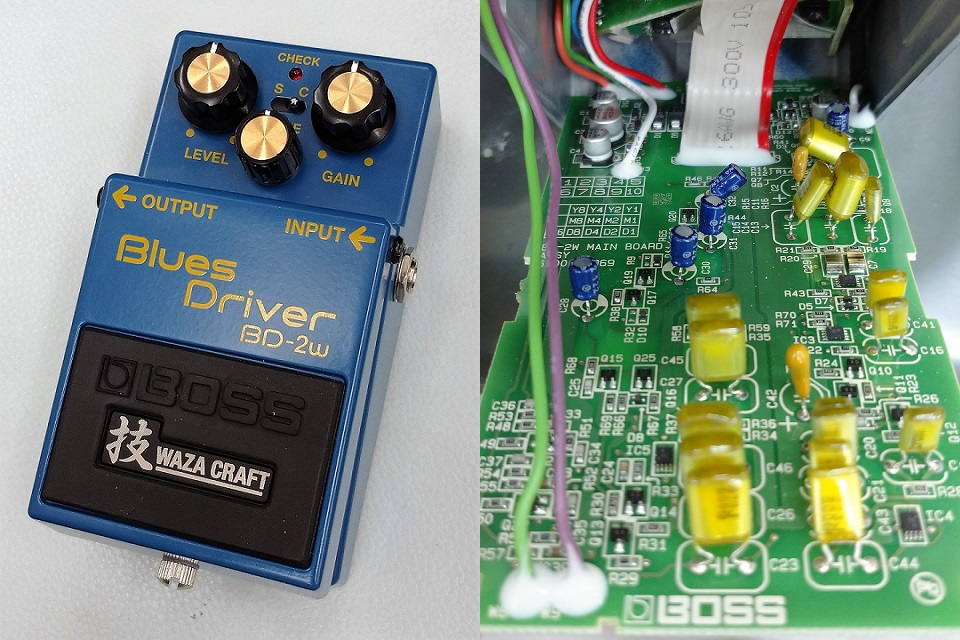
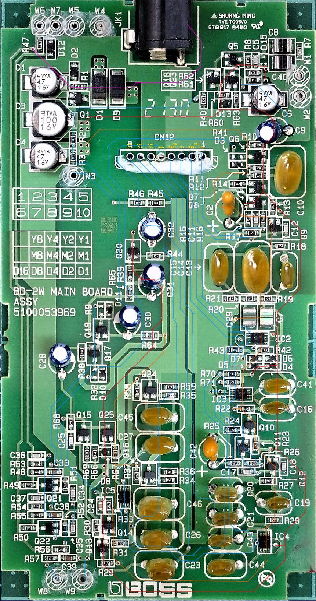
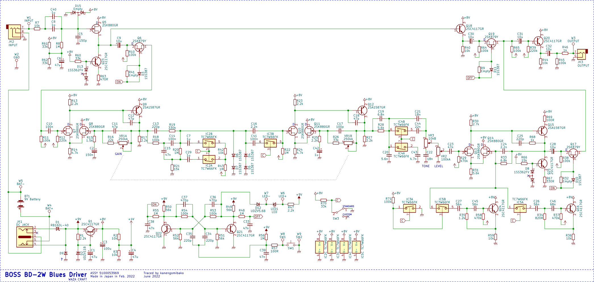
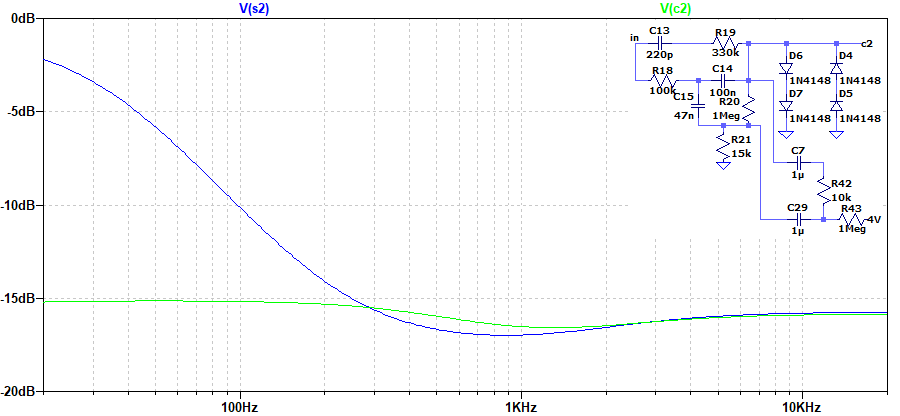
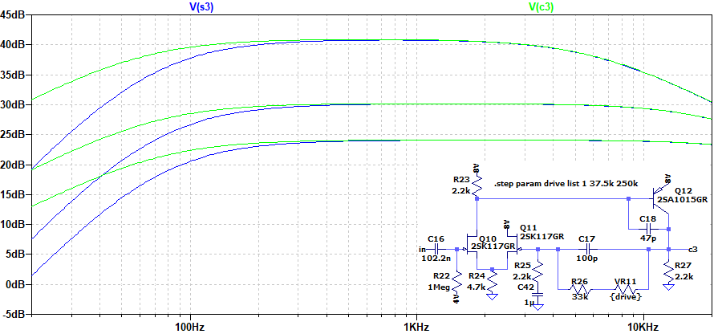
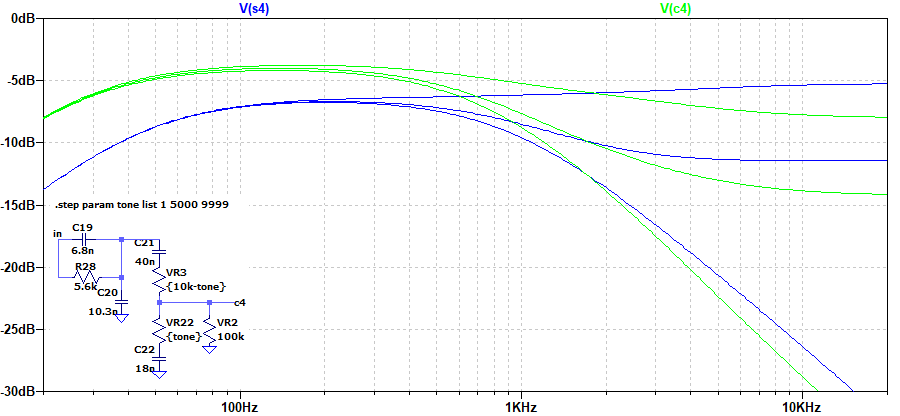
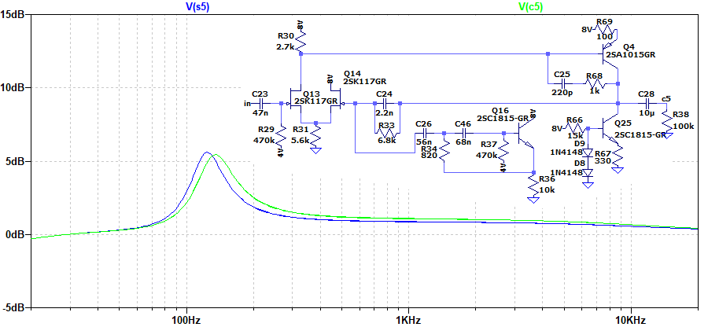
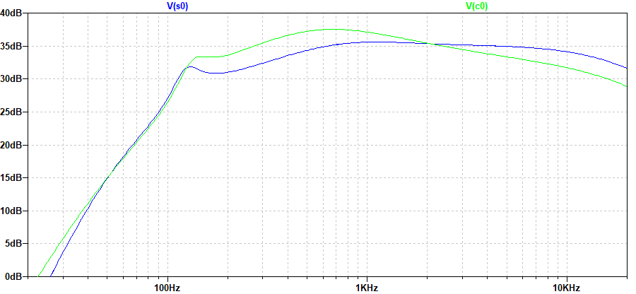

BOSS WAZA CRAFT BD-2W Blues Driver 解析
2022年07月02日 カテゴリー：修理・改造・解析

BOSS BD-2に引き続き、WAZA CRAFTのBD-2Wではどのように変わったのか解析していくことにしました。解析に使ったのは2022年製の個体（上写真）で、日精電機製の黄色いフィルムコンデンサが使われています。KiCadとLTspiceの回路図データ、基板画像はGitHubにあります。
▽基板画像

部品番号があり、小さな表面実装部品がないためそこまで難易度が高くありません。抵抗値が読めるので、取り外すのは一部のコンデンサだけで済みました。
▽回路図

公式サイトの説明に完全ディスクリート構成とある通りオペアンプはありませんが、スタンダードモードの特性は通常のBD-2とほぼ同じです。8ピンのICはアナログスイッチTC7W66FKで、2回路入りのものが4つ使われています。
- 入力バッファ
バイアス電圧が入力部だけ別になっており、他の部分からのバイパス音への影響を排除していると思われます。画像検索で確認すると、SD-1Wでも同様の措置がしてあるようです。SMDバージョンのBD-2と同様に、FETのソースには定電流回路があります。時期的には2014年発売のBD-2Wに先に採用され、その後他の機種にも使われていったのではないかと思います。
- 未実装の抵抗 R9 R32 R41
FETスイッチ部のダイオードに並列に入っている抵抗は未実装となっていますが、SMDバージョンのBD-2では100MΩ抵抗が実装されています。DIYstompboxes.comのFETスイッチに関するスレッドには、スイッチオン時のFETのゲート電位は、ダイオードとFETのリーク電流の差により設定されると掲載されています。あくまで推測ですが、ダイオードに並列接続された抵抗の役割は、この電流をある程度確保することではないかと思います。通常はなくても問題ない抵抗ですが、FETやダイオードの個体差によっては動作が不安定になることがあったのかもしれません。
▽シミュレーション
スタンダードモード（s）とカスタムモード（c）の違いについて、周波数特性を貼り付けておきます。※アナログスイッチのオン抵抗（50Ω程度）は省略しています。




ピークの周波数が125Hzから135Hzへと変わっています。
下図は回路全体を通しての特性です。

公式サイトには、カスタムモードは「繊細なピッキング･ニュアンスに反応する図太く粘りある極上のサウンド」と説明があります。確かに周波数特性としては中音域がやや盛り上がった形になっています。また、クリッピングの前後のフィルタ調整により、歪みの質感を変更するという意図もありそうです。あまりに変化が大きいと通常のBD-2とかけ離れてしまうので、絶妙な加減の調整となっていると思います。